School library · 2018
Maya Somaiya Library
sP+a / Sameep Padora and Associates
Kopergaon, Maharashtra, India
Designed for children, the library brings reading into everyday movement around the school. Multiple access points and different seating arrangements support individual concentration and collaborative study without relying on a single formal reading-room layout.
The vaulted roof uses Catalan tile construction for material efficiency. The architects deliberately combine knowledge from different places and periods, including Eladio Dieste's work, treating construction traditions as resources that can be adapted to a particular local brief.

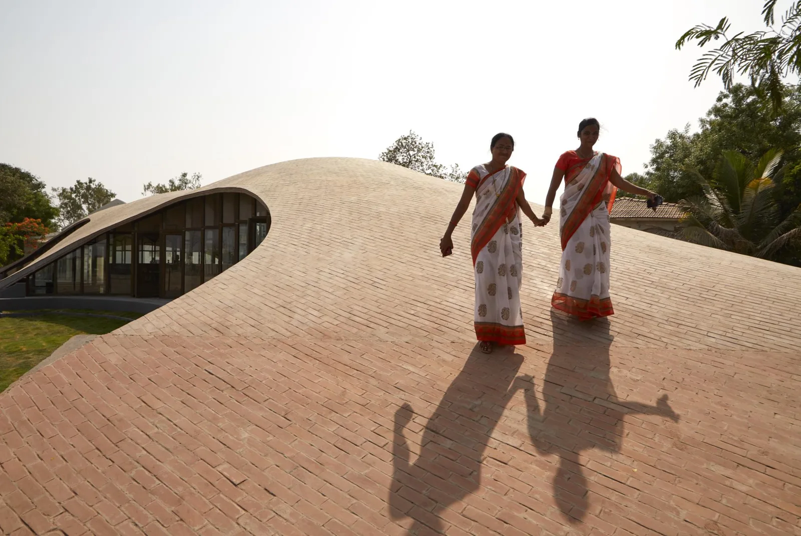
Relevant connections
Images and drawings / 11

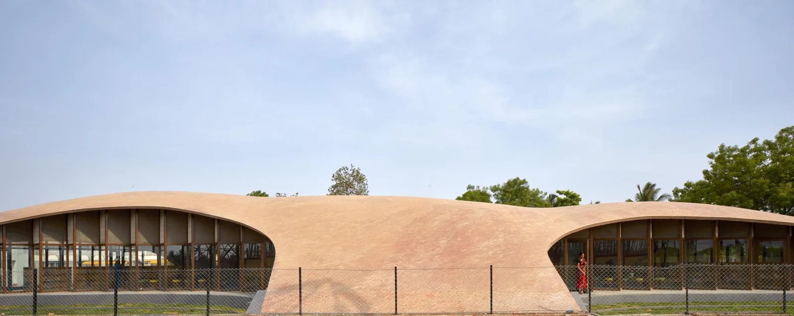

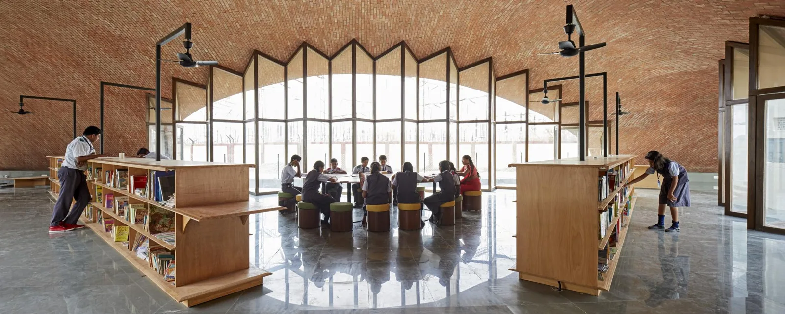

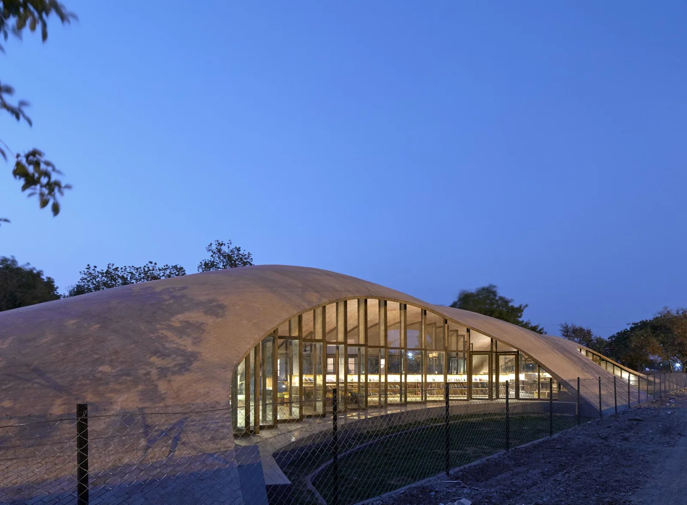

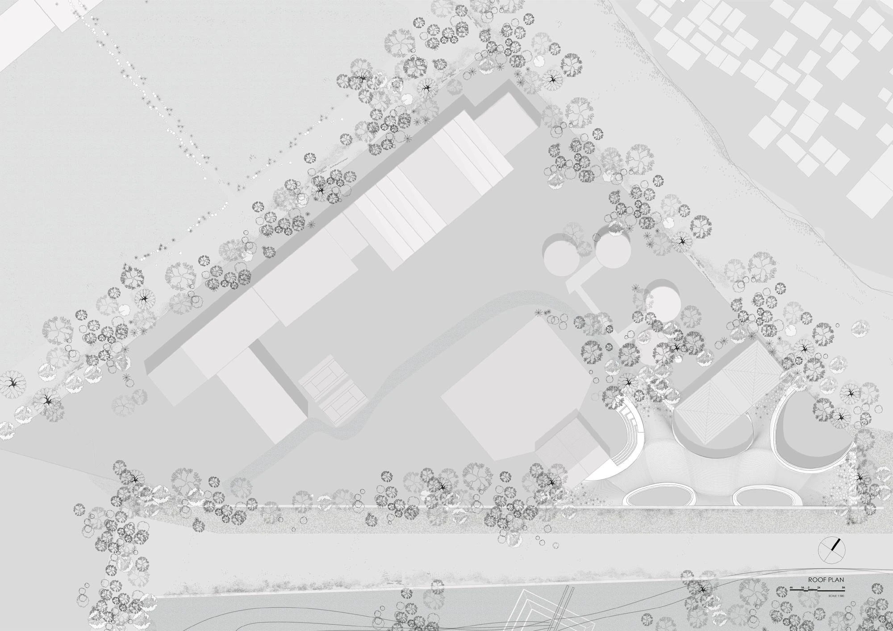

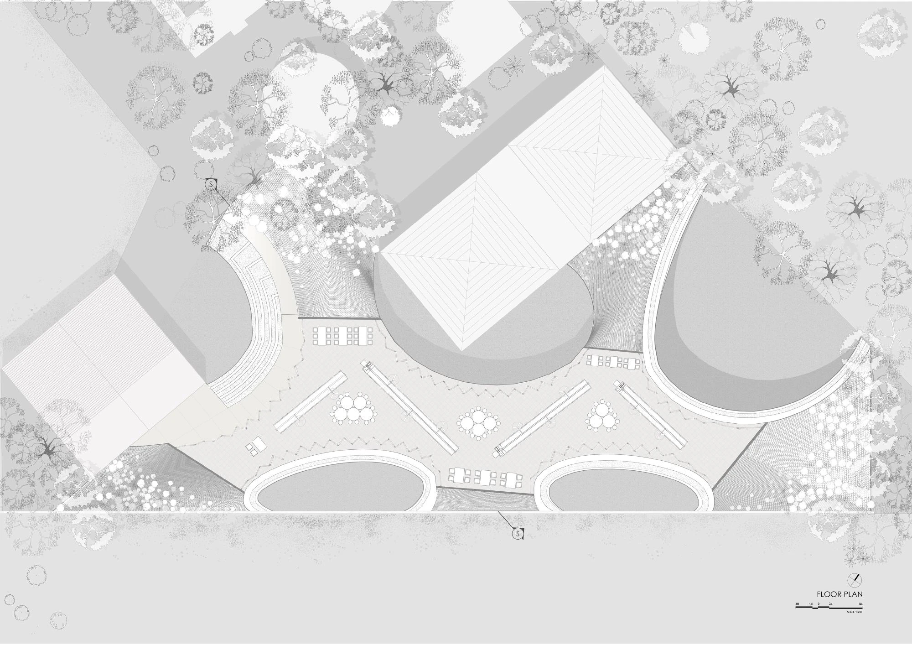

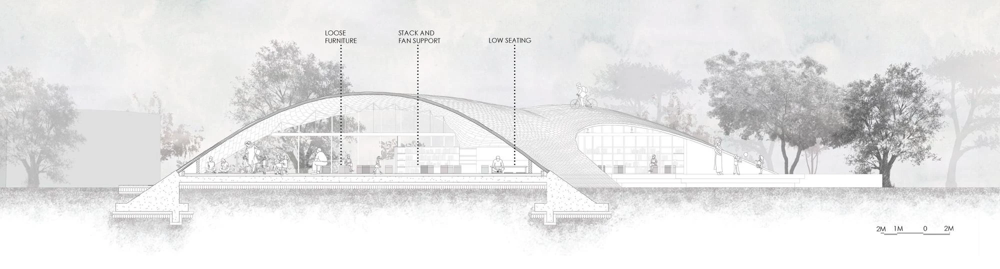

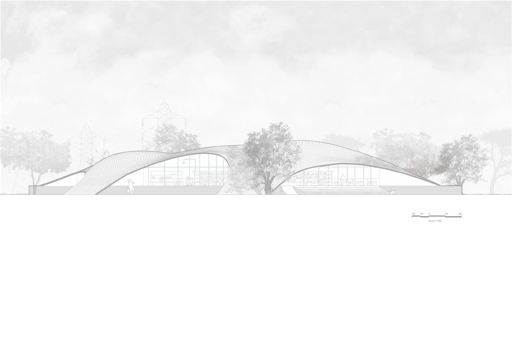

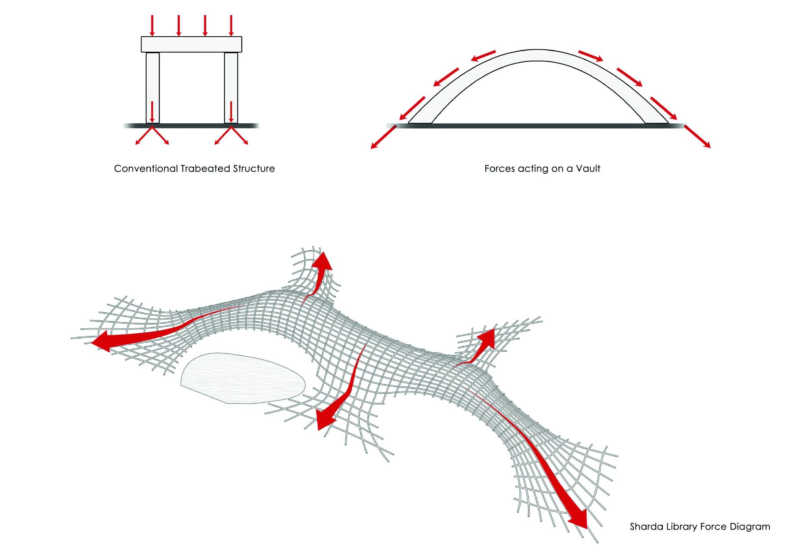

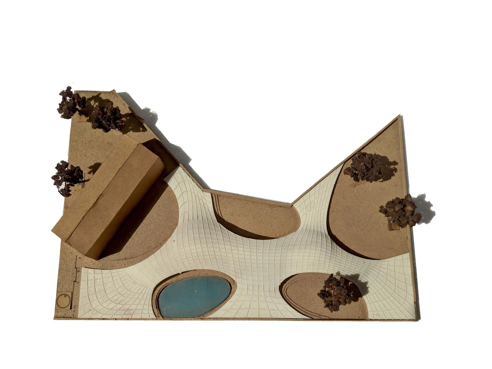

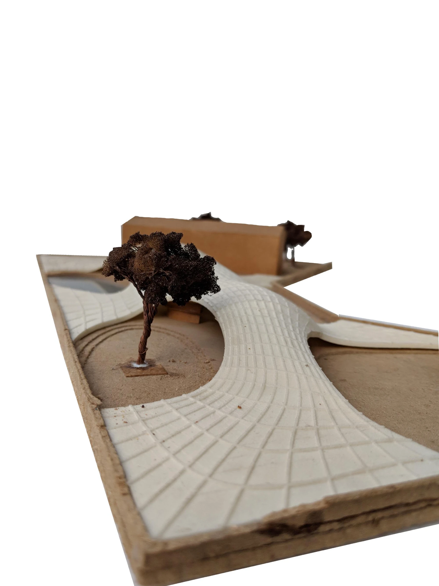